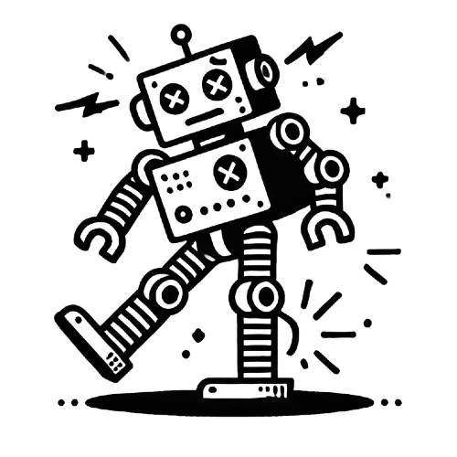

我們正在努力修復中，請稍後再試！
We are working hard to fix this issue. Please try again later!
若您急需存取筆記，請嘗試開啟 Notion 的離線模式，或稍後重新整理頁面。
If you urgently need to access your notes, please try enabling Notion's offline mode or refresh the page later.
您可以關注我們的
Twitter ，了解最新的修復進度。
You can follow our
Twitter to stay updated on the latest fixes.

 Notion 目前暫時無法使用
Notion 目前暫時無法使用